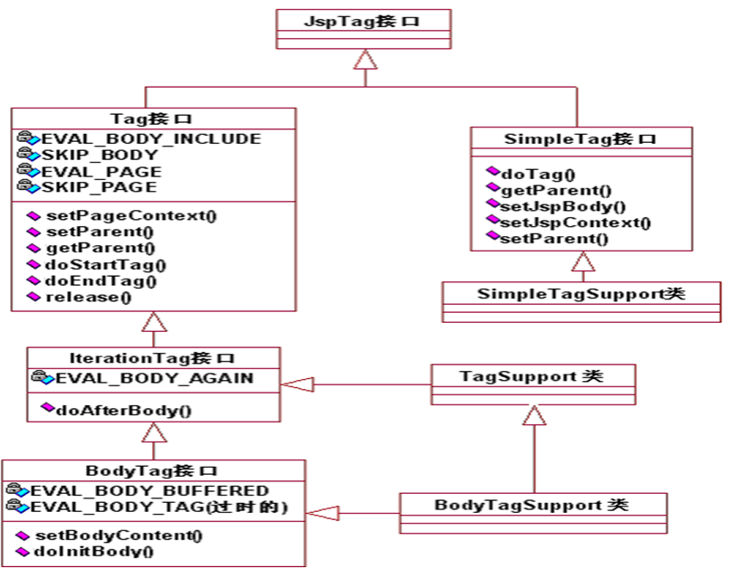

一、自定义标签简介
2.invoke方法详解

作用：
自定义标签主要用于移除Jsp页面中的java代码。控制jsp页面某一部分内容是否执行。控制结束标签后的JSP内容 是否执行控制jsp页面内容重复执行。修改页面内容输出。
一般情况下开发jsp自定义标签需要引用以下两个包
import javax.servlet.jsp.*;
import javax.servlet.jsp.tagext.*;

使用自定义标签移除jsp页面中的java代码，只需要完成以下两个步骤：
编写一个实现Tag接口的Java类(标签处理器类)。
编写标签库描述符（tld）文件，在tld文件中把标签处理器类进行描述。
编写一个实现Tag接口的Java类(标签处理器类)。
编写标签库描述符（tld）文件，在tld文件中把标签处理器类进行描述。
二、SimpleTag接口
1.简单标签共定义了5个方法：
setJspContext方法setParent方法getParent方法setJspBody方法doTag方法
setJspContext方法
用于把JSP页面的pageContext对象传递给标签处理器对象
setParent方法
用于把父标签处理器对象传递给当前标签处理器对象
getParent方法
用于获得当前标签的父标签处理器对象
setJspBody方法
用于把代表标签体的JspFragment对象传递给标签处理器对象
doTag方法
用于完成所有的标签逻辑，包括输出、迭代、修改标签体内容等。在doTag方法中可以抛出javax.servlet.jsp.SkipPageException异常，用于通知WEB容器不再执行JSP页面中位于结束标记后面的内容，这等效于在传统标签的doEndTag方法中返回Tag.SKIP_PAGE常量的情况。
用于把JSP页面的pageContext对象传递给标签处理器对象
setParent方法
用于把父标签处理器对象传递给当前标签处理器对象
getParent方法
用于获得当前标签的父标签处理器对象
setJspBody方法
用于把代表标签体的JspFragment对象传递给标签处理器对象
doTag方法
用于完成所有的标签逻辑，包括输出、迭代、修改标签体内容等。在doTag方法中可以抛出javax.servlet.jsp.SkipPageException异常，用于通知WEB容器不再执行JSP页面中位于结束标记后面的内容，这等效于在传统标签的doEndTag方法中返回Tag.SKIP_PAGE常量的情况。
2.Lifecycle
- A new tag handler instance is created each time by the container by calling the provided zero-args constructor. Unlike classic tag handlers, simple tag handlers are never cached and reused by the JSP container.
- The
setJspContext()andsetParent()methods are called by the container. ThesetParent()method is only called if the element is nested within another tag invocation. - The setters for each attribute defined for this tag are called by the container.
- If a body exists, the
setJspBody()method is called by the container to set the body of this tag, as aJspFragment. If the action element is empty in the page, this method is not called at all. - The
doTag()method is called by the container. All tag logic, iteration, body evaluations, etc. occur in this method.
SimpleTagSupport 类实现 SimpleTag 接口，并添加了其他便捷方法
| Method Summary | |
|---|---|
void | doTag()Default processing of the tag does nothing. |
static JspTag | findAncestorWithClass(JspTag from, Class<?> klass)Find the instance of a given class type that is closest to a given instance. |
protected JspFragment | getJspBody()Returns the body passed in by the container via setJspBody. |
protected JspContext | getJspContext()Returns the page context passed in by the container via setJspContext. |
JspTag | getParent()Returns the parent of this tag, for collaboration purposes. |
void | setJspBody(JspFragment jspBody)Stores the provided JspFragment. |
void | setJspContext(JspContext pc)Stores the provided JSP context in the private jspContext field. |
void | setParent(JspTag parent)Sets the parent of this tag, for collaboration purposes. |
四、JspFragment
1.The definition of the JspFragment must only contain template text and JSP action elements.
abstract JspContext | getJspContext()Returns the JspContext that is bound to this JspFragment. |
abstract void | invoke(Writer out)Executes the fragment and directs all output to the given Writer, or the JspWriter returned by the getOut() method of the JspContext associated with the fragment if out is null. |
JspFragment.invoke方法是JspFragment最重要的方法，利用这个方法可以控制是否执行和输出标签体的内容、是否迭代执行标签体的内容或对标签体的执行结果进行修改后再输出。例如：在标签处理器中如果没有调用JspFragment.invoke方法，其结果就相当于忽略标签体内容；
在标签处理器中重复调用JspFragment.invoke方法，则标签体内容将会被重复执行；
若想在标签处理器中修改标签体内容，只需在调用invoke方法时指定一个可取出结果数据的输出流对象（例如StringWriter），让标签体的执行结果输出到该输出流对象中，然后从该输出流对象中取出数据进行修改后再输出到目标设备，即可达到修改标签体的目的。
五、开发带属性的标签
通过这些属性为标签处理器传递参数信息，从而提高标签的灵活性和复用性。
要想让一个自定义标签具有属性，通常需要完成两个任务：
在标签处理器中编写每个属性对应的setter方法在TLD文件中描术标签的属性
在标签处理器中定义相应的set方法后，JSP引擎在解析执行开始标签前，也就是调用doStartTag方法前，会调用set属性方法，为标签设置属性。
六、PageContext extends JspContext
供容器生成的代码使用的方法
支持生命周期的方法是
initialize() 和 release()。供 JSP 作者使用的方法
以下方法提供对隐式对象的便捷访问：
getException()、getPage()、getRequest()、getResponse()、getSession()、getServletConfig()和getServletContext()。以下方法提供对转发、包含和错误处理的支持：
forward()、include()和handlePageException()。